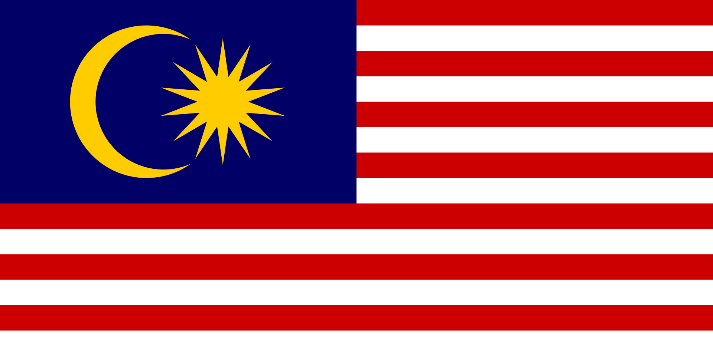

QUICK INFORMATION ABOUT MALAYSIA
Factfile: |
|
|---|---|
| Flag |  |
| Form of Government | Constitutional monarchy |
| Capital City | Putrajaya (adminstrative) Kuala Lumpur (federal) |
| Population | 32.7 million (2021) 32.6 million (2020) |
| Language | Bahasa Melayu, English, Mandarin, Tamil |
| Currency | Ringgit Malaysia (MYR/RM)- Click here for current exchange rate! |
| Independence Day | 31st August (gained independence from the British in 1957) |
| Monarch (Yang di-Pertuan Agong) | Abdullah of Pahang |
| Prime Minister | Ismail Sabri Yaakob |
ABOUT MALAYSIA
Malaysia is a Southeast Asian country just north of the equator. It has two regions: Peninsular Malaysia, also called West Malaysia, and East Malaysia, which is on the north side of Borneo and is separated by the South China Sea. Its capital is Kuala Lumpur, and its administrative capital is in Putrajaya. Malaysia has 13 states: Johor, Kedah, Kelantan, Melaka, Negeri Sembilan, Pahang, Penang, Perak, Perlis, Sabah, Sarawak, Selangor, Terengganu, and three Federal Territories: Kuala Lumpur, Putrajaya, and Labuan (in east Malaysia). The only states in East Malaysia are Sabah, Sarawak, and Labuan, and the rest are in Peninsular Malaysia. Malaysia was a British colony in the past. On September 16, 1963, Sabah, Sarawak, and Singapore joined to form the Federation of Malaysia. But in 1965, Singapore was kicked out of the federation.
Peninsular Malaysia has land borders to the north with Thailand and to the south with Singapore. It also shares a border with Sumatra in Indonesia, across the Straits of Malacca to the west. In the south, East Malaysia has a land border with Brunei and Indonesia (Kalimantan).
Malaysia has a tropical climate, with daily temperatures ranging from 23 to 32 degrees Celsius. Malaysia is also known for its rainforests, which are full of an abundance of different types of flora.
FUN FACTS
Malaysia is a constitutional monarchy, which means that the King, officially called the Yang di-Pertuan Agong, is the Supreme Head of the Federation of Malaysia. The fascinating thing is that that a Conference of Rulers elects the Yang di-Pertuan Agong every five years. The rulers of the nine Malay states and the four governors of other states without a ruler make up the Conference of Rulers. Each ruler will take turns to be the Yang di-Pertuan Agong on a rotating basis. In the meantime, if necessary, the Conference of Rulers can dismiss the Yang di-Pertuan Agong. It is the only place in the world with a system like this.
Malaysia is located close to the equator. It has an equatorial climate, and Malaysia is home to rainforests.
The tallest twin tower, the Petronas Twin Towers, is located in Kuala Lumpur, Malaysia. It was once the tallest skyscraper in the world, with a height of 452 metres ( feet). As of today, it is still the tallest twin tower in the world.
CUISINE
In Malaysia, we have a variety of cuisines ranging from Chinese, Indian and Malay cuisine.
MALAY
(Nasi Lemak)
You can try nasi lemak, considered by many to be the national dish of Malaysia. There are also many delicious Malay cuisine such as:
apam balik, nasi kerabu, ayam percik, rendang, kuih, nasi kandar, and asam pedas, pisang goreng (banana fritters), ketupat, otak-otak, putu piring, satay and rojak.
CHINESE
There are also many delicious Chinese food found in Malaysia. Examples are:
char kueh teow, laksa, chai tow kuay, wonton mee, mee rebus, lor bak, kaya toast (for breakfast), popiah (spring roll)
(Laksa)
INDIAN
Indian food is also popular in Malaysia. You can eat:
roti canai, roti john, murtabak
CULTURE
Malaysia is a multi-cultural and multi-racial nation, and Malaysians celebrate many festivals among the population annually. The official religion of Malaysia is Islam. Any Malaysian is free to practice their religion, as stated by the Federal Constitution of Malaysia. According to the Department of Statistics in Malaysia, the estimated percentage of citizen population by ethnic group in 2021 is 69.8% Malay, 22.4% Chinese, 6.8% Indian, and 1.0% others.
BRIEF HISTORY
In 1400 AD, the Sultanate of Malacca founded Malacca (now Melaka) near the Straits of Malacca. Malacca's strategic position at the eastern end of Indian Ocean trade routes attracted traders from far. Spices and silks passed through Malacca on their way to their destination. The Sultanate ruled Peninsular Malaysia's east coast and west Sumatra.
European powers colonised Malaya (Peninsular Malaysia) for its gold and tin resources. Portugal invaded Malacca in 1511. Under their leadership, Malacca declined. Soon, the Sultanate of Aceh (located in North Sumatra) threatened it. The Dutch East Indies Company attacked and seized Malacca in 1641.
In 1786, the British East India Company constructed Penang, which overtook Malacca as a trade port. Sir Stamford Raffles created Singapore in 1819. Its location at the southern end of the Straits of Malacca made it a major commercial port. The Anglo-Dutch Treaty gave the British Malacca in 1824. Britain colonised Sabah and North Borneo (Sabah). Meanwhile, the sultanates controlled the nine other regions in Malaya.
In 1824, the British governed Penang, Singapore, and Malacca as part of the Strait Settlements. The nine sultanates were indirectly governed, therefore their sultans continued to reign while being affected by British culture. During this time, Chinese immigrants landed in Malaya, founded Kuala Lumpur and Ipoh. Chinese and British tin miners flocked to Malaya.
Between 1941-1945, the Japanese Army invaded Malaya, Borneo and Singapore. After the war, they would be restored to British authority, and self-governance was soon introduced in Malaya. The British soon formed the Malayan Union. Malay nationalists led by UMNO (United Malays National Organisation) party opposed the formation. This led to the founding of the Federation of Malaya in 1948. The Communist Party of Malaya wanted to overthrow the colonial authority and control Malaya. However, the British repressed the Communist Party's endeavours.
On August 31, 1957, Malaya gained independence from the British. Tunku Abdul Rahman's Alliance Party ruled Malaya. Singapore, North Borneo, and Sarawak won independence. North Borneo was renamed Sabah when it joined Malaya to become Malaysia on 16 September 1963. 1965 would see Singapore's expulsion.